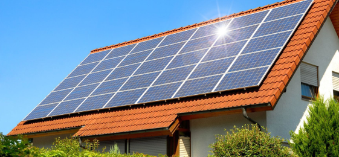

Selamat datang di halaman Pembelajaran SolarSTEM, tempat dimana kita merinci lebih lanjut tentang bagaimana
informasi terkini tentang energi terbarukan , penggunaan energi surya dapat mengubah paradigma energi global
dan memberikan kontribusi nyata terhadap keberlanjutan planet kita.
Apa Itu Energi Matahari/Surya?
Science
Energi surya adalah panas dan cahaya radiasi dari Matahari yang dapat dimanfaatkan dengan teknologi
seperti tenaga surya (yang digunakan untuk menghasilkan listrik) dan energi panas matahari (yang digunakan
untuk aplikasi seperti pemanas air).
Sebagai sumber daya energi yang terbarukan dan bersih, tenaga surya dapat digunakan sebagai pengganti bahan bakar fosil, menghasilkan panas, menciptakan reaksi kimia, dan menghasilkan listrik. Teknologi energi surya dapat dibangun secara fleksibel dalam skala besar dan memungkinkan energi yang dikumpulkan untuk disimpan untuk digunakan di kemudian hari.
Sebagai sumber daya energi yang terbarukan dan bersih, tenaga surya dapat digunakan sebagai pengganti bahan bakar fosil, menghasilkan panas, menciptakan reaksi kimia, dan menghasilkan listrik. Teknologi energi surya dapat dibangun secara fleksibel dalam skala besar dan memungkinkan energi yang dikumpulkan untuk disimpan untuk digunakan di kemudian hari.
Pengaruh Energi Surya pada Lingkungan
Science
Energi surya memiliki sejumlah pengaruh pada lingkungan, dan banyak aspek dari dampaknya dapat dievaluasi
dalam konteks ilmiah. Berikut adalah beberapa pengaruh utama energi surya pada lingkungan:
1. Reduksi Emisi Gas Rumah Kaca
Pemanfaatan teknologi fotovoltaik dalam mengkonversi energi matahari menjadi listrik memiliki dampak
positif terukur terhadap penurunan emisi gas rumah kaca. Dengan mengurangi ketergantungan pada pembangkit
listrik berbasis bahan bakar fosil, penggunaan energi surya berkontribusi signifikan pada mitigasi
perubahan iklim, mengurangi jejak karbon dioksida (CO2) dan gas rumah kaca lainnya.
Pentingnya teknologi ini dalam menghadapi krisis iklim tidak hanya terletak pada pengurangan emisi saat operasional, tetapi juga pada potensi jangka panjangnya. Riset terus menerus di bidang ilmu material dan teknik fotovoltaik mempercepat perkembangan panel surya yang lebih efisien dan ramah lingkungan. Inovasi ini membuka peluang untuk mengeksplorasi potensi energi matahari dengan lebih efektif, memperluas dampak positif terhadap perubahan iklim di masa depan.
Pentingnya teknologi ini dalam menghadapi krisis iklim tidak hanya terletak pada pengurangan emisi saat operasional, tetapi juga pada potensi jangka panjangnya. Riset terus menerus di bidang ilmu material dan teknik fotovoltaik mempercepat perkembangan panel surya yang lebih efisien dan ramah lingkungan. Inovasi ini membuka peluang untuk mengeksplorasi potensi energi matahari dengan lebih efektif, memperluas dampak positif terhadap perubahan iklim di masa depan.
2. Kurangnya Pencemaran Udara dan Air
Teknologi fotovoltaik, yang merupakan tulang punggung energi surya, tidak hanya menghasilkan listrik tanpa
emisi gas rumah kaca, tetapi juga tanpa menciptakan polusi udara atau air selama siklus operasionalnya. Hasil
penelitian ilmiah menunjukkan bahwa implementasi energi surya secara signifikan mengurangi dampak pencemaran
udara, memastikan kualitas udara yang lebih baik bagi lingkungan sekitarnya.

3. Penggunaan Tanah yang Efisien
Dalam bidang ilmu tanah dan perencanaan ruang, penggunaan lahan yang efisien adalah aspek penting.
Pembangunan fasilitas energi surya tidak hanya dapat memanfaatkan lahan yang sebelumnya tidak produktif,
tetapi juga mengintegrasikan panel surya ke dalam struktur yang sudah ada, seperti atap bangunan.
Pendekatan ini, didukung oleh penelitian khusus dalam rekayasa struktural dan urbanisme, membawa manfaat
ganda dalam efisiensi pemanfaatan lahan.
Perkembangan Teknologi Surya
Technology
Teknologi panel surya terus berkembang pesat seiring waktu. Beberapa perkembangan utama termasuk:
1. Efisiensi Panel Surya
Panel surya modern memiliki efisiensi yang lebih tinggi dibandingkan dengan model sebelumnya. Penelitian
dan pengembangan terus dilakukan untuk meningkatkan rasio konversi energi matahari menjadi listrik.
2. Teknologi Thin-Film
Panel surya tipis atau thin-film semakin populer. Mereka lebih ringan, fleksibel, dan dapat diintegrasikan
ke dalam berbagai permukaan.
3. Transparent Solar Panels
Pengembangan panel surya transparan memungkinkan penggunaan mereka sebagai jendela atau fasad bangunan,
memaksimalkan pemanfaatan energi matahari tanpa mengorbankan tampilan.
Cara Kerja Panel Surya
Technology
Panel surya, juga dikenal sebagai modul fotovoltaik, adalah perangkat teknologi canggih yang memanfaatkan
sinar matahari untuk menghasilkan energi listrik. Proses konversi energi matahari menjadi listrik ini
dikenal sebagai efek fotovoltaik. Mari kita jelajahi lebih dalam cara kerja panel surya dengan menonton
video yang terdapat pada di samping.
Pratikkum Sederhana Teknologi Panel Surya
Engineering
Menghitung Penghematan Biaya Listrik Per Panel Surya
Mathematics
Cara mudah untuk memperkirakan penghematan yaitu dengan menghitung Penghematan Per Modul Surya. Dalam
contoh ini kami membuat tiga asumsi:
- Spek modul surya menggunakan ICA310-60M, 60-sel, dengan ukuran 1.64m x 0.99m
- Peak-Sun Hours rata-rata di Jakarta adalah 3.5/kWh/kWp/hari
- Tarif Tenaga Listrik (TTL) adalah Rp 1.467/kWh.
- Penghematan Per Modul / Hari = 0.31kWp (310Wp) x 3.5PSH x Rp 1.467/kWh = Rp 1.592,-
- Penghematan Per Modul / Bulan = Rp 1.592 x 30 hari = Rp 47.760,-
- Penghematan Per Modul / Tahun = Rp 47.760,- x 12 bulan = Rp 573.120,-
Misalkan luas atap yang tersedia di rumah adalah 20 meter persegi, dengan dimensi modul surya 1.64m x
0.99m atau area 1.62 meter persegi, berarti atap bisa menampung sekitar 12 (20 ÷ 1.62) modul surya
ICA310-60M menjadikan kapasitas PLTS sebesar 3.72kWp (12pcs x 310Wp).
- Penghematan 3.72kWp per Bulan = 3.72kWp x 3.5 PSH x 30 Hari x Rp 1.467/kWh = Rp 573.010,-/bulan
- Penghematan 12 Modul Per Bulan = Rp 47.760,- x 12 modul = Rp 573.120,-
- Bisa disimpulkan nilai akhir penghematannya hampir sama.